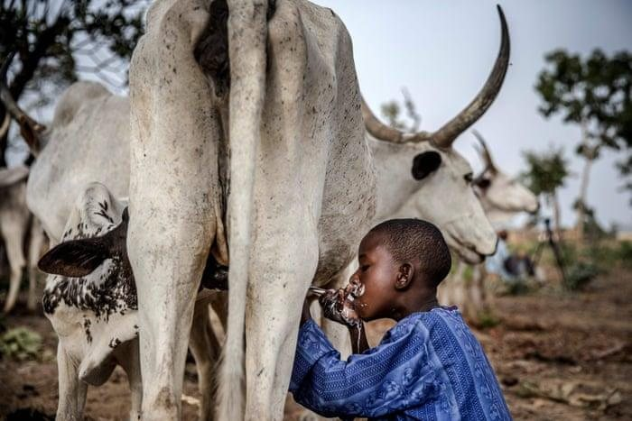
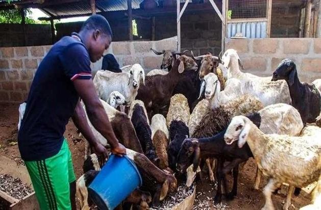
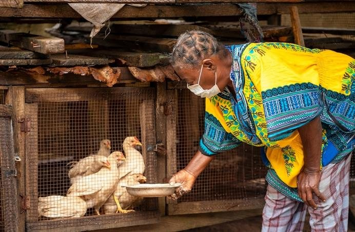

01
Baselines before activity
No intervention begins without a recorded baseline in the livestock information system, so change is attributable rather than asserted.
CHOLD Initiative aims to transform livestock systems through measurable, high-impact interventions across innovation, data systems, leadership engagement and sustainable development. Attaining these impacts is hinged on strong partnerships and collaborations with stakeholders.
Development of climate-sensitive livestock insurance tools for vulnerable communities.
Creation of an open-access knowledge platform for data, research and training materials.
Faster containment depends on physical infrastructure and rehearsed protocol, not goodwill. These are the assets we intend to have standing by 2030.




Every figure on this page traces back to a data source we are building rather than a survey we will commission at the end.
No intervention begins without a recorded baseline in the livestock information system, so change is attributable rather than asserted.
Field-integrated collection through mobile reporting, community informants and RFID tagging means the record is created where the animal is, not in a spreadsheet afterwards.
M&E systems are built inside the MDAs that will still be there after the programme closes, so measurement survives the funding cycle.
We are seeking government, donor, private sector and research partners to deliver against the 2025–2030 framework.